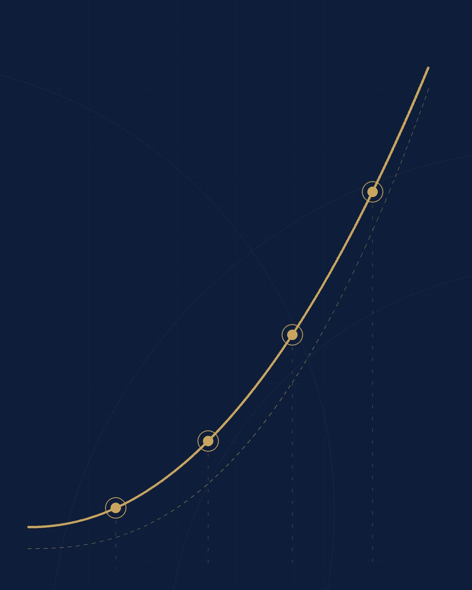
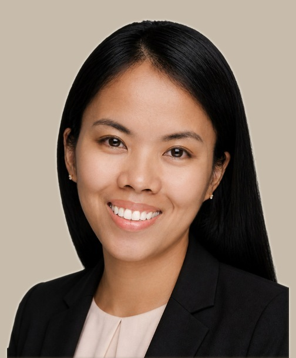

The architecture of each child.
Telos is an education and advisory practice for the foundation years — the stretch of schooling, from age eight, that everything later stands on. One child, one plan, built across a full academic horizon.
The masterclass is a session for parents, online and face to face, led by the founder.

Great futures are designed at the drawing board.
The most transformative years in a child’s education are the foundation years — the formative stage when every possibility is within reach.
Telos partners with families in those pivotal years. We partner with parents and students to design a child’s pathway the way an architect designs a landmark: from the ground up, with a clear horizon in view, so every future milestone rests on a foundation that is thoughtful, resilient, and built to last.
In practice, that brings two disciplines together under one roof. Education: tailored academic guidance to strengthen your child’s core capabilities right inside the curriculum they already follow. Advisory: long-term planning alongside you, so every decision is guided by evidence, foresight, and the freedom of time.
Our advisory work is guided by the 21 Trajectories — Telos’s own map of the distinct futures a student can build toward. We begin with who your child is today, and plan toward the full horizon of where they can go.
Four principles that hold the structure up.
Long horizon
We guide your child’s ground-up work so every future milestone rests on something built to last.
Structure before speed
We plan for the full arc of the foundation years because true progress is the kind that builds on itself—turning today’s steady habits into tomorrow’s lasting strengths.
Evidence made visible
Feedback and a portfolio that show a child where they stand, with guidance as they choose their next pathways.
One architecture per child
Every plan is drawn for a single child, their strengths, and the horizon they’re building toward.
The method leans on the learning-science and formative-assessment literature — Dylan Wiliam and John Hattie among the touchstones — and on years of classroom practice.

Founder
The person behind Telos
My career has been built from the inside of leading schools. I have taught in the classrooms of Dubai and the Philippines, served in school leadership and administration, and mentored students one-to-one across the globe — both online and in person. That hands-on experience is grounded in a Master’s in School Administration and a Postgraduate Diploma in Education.
Telos comes out of a pattern: most children who thrived later were the ones whose foundations were built on purpose. I started this practice to do that building deliberately — grounded in research, and given the patience the foundation years deserve.
— Vanj
Founder, Telos · M.A. School Administration, PGDE
Three ways to work with Telos.
Each engagement builds on the one before it — from first conversation to sustained oversight across the foundation years.
Masterclass
the drawing boardAn open session where families meet the approach — an hour that reframes how the foundation years are planned. The place to begin.
Strategic Audit
the surveyA one-on-one assessment of your child’s current strengths and the areas ready for reinforcement — a thorough survey of the ground before the first stone is laid.
Cohort Retainer
the buildOngoing architectural oversight across the foundation years — sustained, individual guidance as the structure goes up, term after term.
Have questions about fit or fees? Write or call, and you will reach Vanj directly.
Questions parents ask
What is Telos?
Telos brings education and advisory together in one place—academic support to build your child’s core capabilities, paired with long-term planning for your family. Most families use both, because each makes the other stronger.
What age does Telos start?
A student starts right where they are. While many families begin around age eight, we welcome students of all ages and meet each child at their current stage, building forward from there.
Which curriculum does it follow?
Yours. Every plan is designed around the curriculum your child is already studying. The architecture is built around the child, not the syllabus.
Where do sessions happen?
Live online over video—so we can work together wherever your family is in the world—as well as face-to-face in Dubai.
How do we begin?
Start with the masterclass—a live session for parents on how to plan the foundation years with clarity. Families who want to go deeper can book a Strategic Audit afterward.